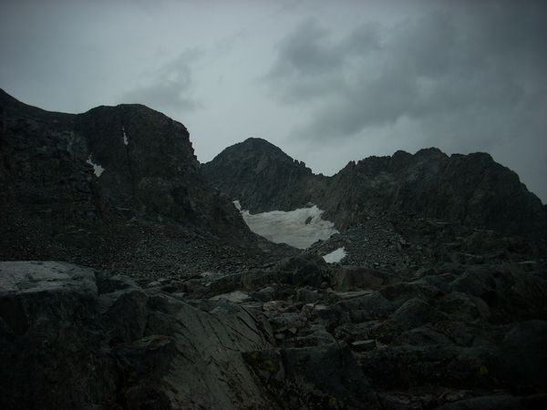
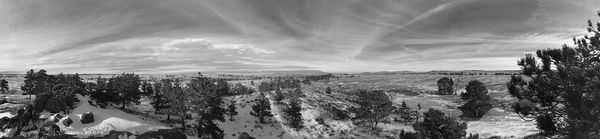

Gannet Peak Gannet Peak - Day 8 - Visiting the Bomber Wreck The last day of the the trip I hiked to the wreck of a B-24 that had crashed while on a training mission during the Second World War.
Gannet Peak Gannet Peak - Day 7 - Over the Top I woke up in no hurry and began the hike up the hill, having first looked for tipi rings, and taking more photos.After the crest of the hill,I was passed by
Gannet Peak Gannet Peak - Day 6 - Out of the Canyon On the morning of day 6, I woke up early, packed my gear and headed down the trail without breakfast, because I wanted to get out ahead of the snowmelt.The stream was
Gannet Peak Gannet Peak - Day 5 - The Ascent I started out from camp twice, the first time I woke up at 1:00 am, loaded my stuff in the dark and headed into the boulder field. It was dark and before
Gannet Peak Gannet Peak - Day 4 - Getting to Base Camp On Day 4 I woke up, had breakfast and began heading up the trail once more. I had one serious creek crossing that made me glad that I had gotten up early and
Gannet Peak Gannet Peak - Day 3 - Back on Track Since I had gotten lost on Day 2, most of day three was spend retracing my steps and getting back on the right path. I woke up, had my breakfast, tried to go
Gannet Peak - Day 2 - Wrong Turn When I woke up, it was overcast and grey and just barely drizzling. Fortunately, unlike some of my other adventures, I had stayed dry throughout the night.I got up, retrieved my food
Gannet Peak Gannet Peak - Day 1 - Beginning In the summer of 2016 I decided that I wanted to climb Gannet Peak, the highest point in Wyoming and the most remote of all of the state high points.
Mt. Ritter Failed Attempt on Mt. Ritter - Walkout I woke up and headed out just as fast as I could, the soaking wet sleeping bag meant that I was less miserable once I was hiking out. I started before the sunrise
 Mt. Ritter Failed Attemp on Mt. Ritter - The Climb The day of the climb, I woke up really early and headed up the mountain. It was hard going with lots of talus and rubble. I made it up to the final lake
Mt. Ritter Failed Attempt on Mt Ritter - The Approach At the end of the summer of 2014, after I had been working at Summit Adventure in Bass Lake, California, I set off to climb Mt. Ritter by myself.The first day I
Peak Ascents Triple Divide Peak In the summer of 2014, I set out to climb Triple Divide peak in the Ansel Adam's wilderness in California.I parked at the Balls and headed up towards Jackass Lake. From Jackass
2017 Adventure Mammoth Cave Utah Mammoth Cave in Utah is a very interesting place. The short version is that it is comprised of two intersecting lava tubes that form a rough X. It collapsed almost at the dead
Peak Ascents Keyhole Route On Long's Peak This summer I climbed Long's Peak in Colorad via the Keyhole route. It was a peak that I have often seen and wanted to climb before the summer was over and conditions became
2017 Adventure Visiting Bryce Canyon National Park After doing Copper Belt Peak, I headed south to Bryce Canyon, again sleeping in my car and then heading into the park in the morning. I rode the shuttle bus in and went
2017 Adventure Climbing Copper Belt Peak I saw probably 20-30 mountain goats and passed quite a number of trees that had been initialed by sheepherders back in the early 1920-30's which I found rather interesting.
2017 Adventure 2017 Summer Adventure Begins At the beginning of the summer of 2017 I quit my job and headed out on a four month trip to backpack and hike climb mountains in the western United States.
 Programming Basic Black and White Algorithms There are lots of different ways of converting a color image to Black and White, but, once you understand the basic idea, it gets simpler from there.
Peak Ascents Failed summit attempt on Laramie Peak When I was in college,5 of us decided that we were going to attempt to climb Laramie Peak. It's not a huge peak, but it is very prominent, and very easy to